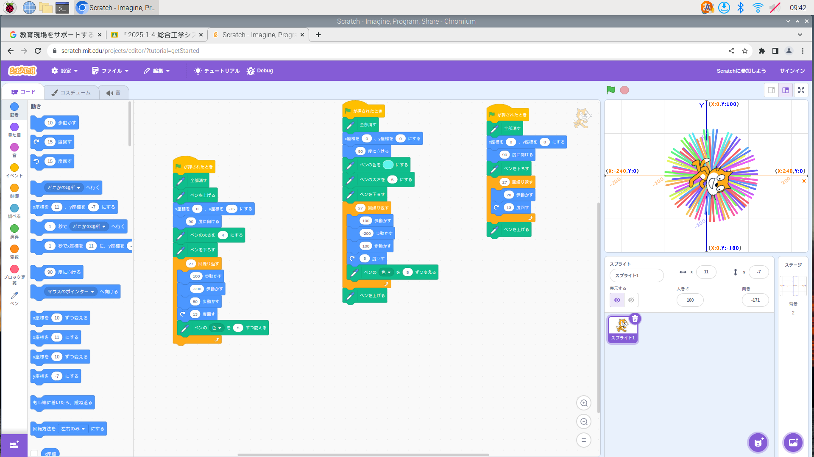
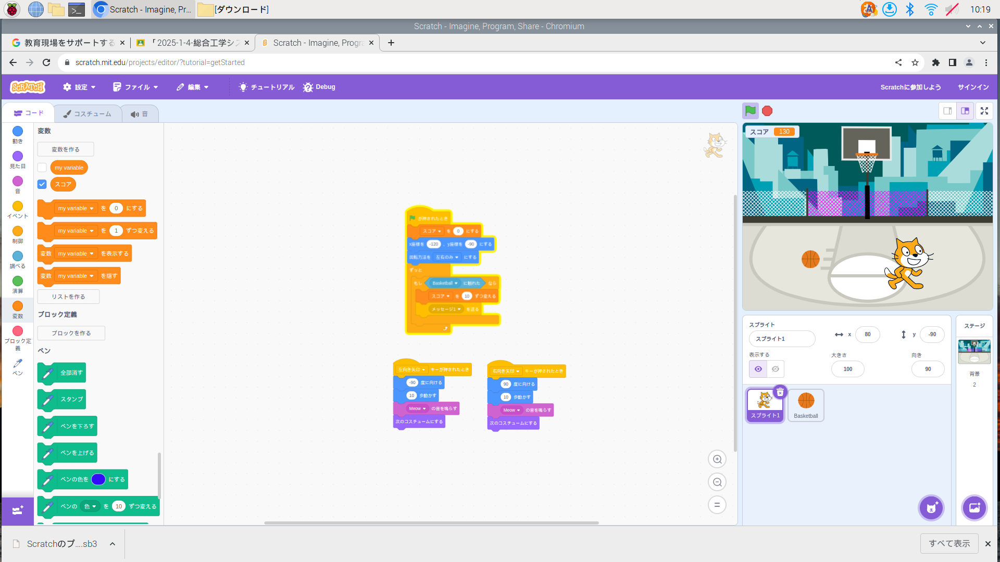

1週目のレポート ： 公大高専１年実習I-1
4b班30番 畑中
第1週目
1-1 サイエンスアート

1.内容
スクラッチ内の拡張機能であるペンを使用し画面内に線を描画することができた。方法としてはゲーム内のスクリプトであるcatを使用し、catにペンを降ろさせcatをプログラムで動かし描画するという方法。私はテキストにあった３つのプログラムを、繰り返しの回数のみ合わせ同時に実行することで画像のようなアートを作った。
2.感想
角度や繰り返しの数を少し変えるだけでアートには大きな変化が生まれて楽しかった。同時に実行するプログラムの組み合わせを変えることでも模様が大きく変化して面白かった。
1-2 ゲーム

1.内容
ゲーム内のキャラであるcatをプレイヤーが動かせるようにプログラムし、バスケットボールを上から下へ移動させcatがそれに触れることで見えなくし、catがバスケットボールを得たというプログラムができた。
2.感想
自分でゲームを作れている感じがして楽しかった。
もっとシステムを増やしたり、タイトル画面などを作ることもできそうだなと考えた。そしてゲームオーバーもシステムに取り入れられそうだなと思った。
1-3 ホームページ作成
私のホームページ
1.内容
このbrという文字列が文を表示させる文字列なのが分かった。
そしてホームページもプログラムを書き換えることで見せ方を変えることができることも分かった。
2.感想
ぱっと見ではプログラム画面が何を意味しているか分からないなと思った。
ホームページで文を表示させることなんて簡単と思うのにこんなに長いプログラムを使わなければならないのかとびっくりした。
各ページへのリンク
1週目のレポート
2週目のレポート
3週目のレポート
私のホームページ